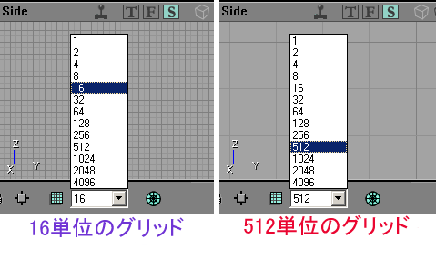
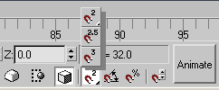
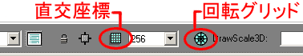
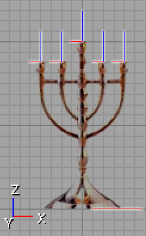
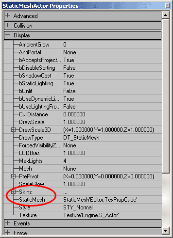
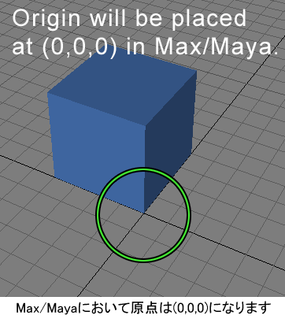
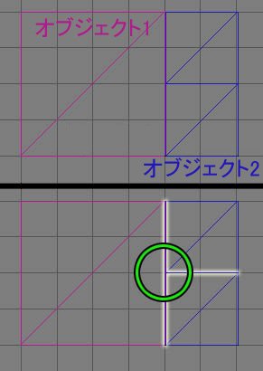
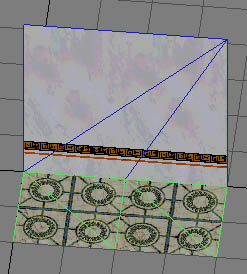

UDN
Search public documentation:
WorkflowAndModularityJP
English Translation
한국어
Interested in the Unreal Engine?
Visit the Unreal Technology site.
Looking for jobs and company info?
Check out the Epic games site.
Questions about support via UDN?
Contact the UDN Staff
한국어
Interested in the Unreal Engine?
Visit the Unreal Technology site.
Looking for jobs and company info?
Check out the Epic games site.
Questions about support via UDN?
Contact the UDN Staff
ワークフロー技術とモジュール方式を使用する
文書の概要:アートからレベルへの設計経路を準備し、モジュール方式設計を行うためのガイド。 文書の変更ログ:原文著者 - Lin, Lentz, Sturgill, Reed (DemiurgeStudios?)。本書の作成に際し参考にさせていただいたGame Developer誌記事の著者、Lee Perryに感謝します。はじめに
本書では、資産の開発、作成、および実施のプロセスの合理化について主に説明しています。アートのアイディアや資産の組み立て方は個人次第で、アーティスト、レベル設計者、またはプログラマーによって異なりますが、バラバラで、まぎらわしいことが良くあります。ここに記載されたヒントを使用すると、Unreal Engineの制約事項に取り組む際に、より効率的かつ集中的な方法でチームの作業を進めることができます。モジュラー式レベル設計
まず、モジュラー式レベル設計とは？そして、モジュラーレベル設計を使用したい理由は何でしょうか？最も簡単に言うと、モジュラー設計とは、再利用されない専用の資産からレベル全体を作成するのではなく、高品質なレベルのかたまりを多く作成し、これらのかたまりを知的に再利用することです。このアプローチでは、レベル設計者とアーティストがさらに協力し合って作業を進めることが必要となります。これによって、昔のいきあたりばったりな方法の時には存在しなかった、新たな頭痛の種がいくつか生まれるかもしれません。しかし、このテクニックによる効果は非常に強力です。 モジュラー方式には、多くの利点があります。部屋を1つだけ作成している場合、別々の部品を作成するよりも、非モジュラー方式で部屋を作成する方が早くなります。しかし、部屋の数が100部屋に達すれば、この方式を採り入れることによって節約できる時間を実感するでしょう。また、このプロセスを使用すると、レベル設計者は、最も得意なもの（プレイエリアとジオメトリ）に専念することが可能です。たとえば、入り口をもう1つ作成し、そのテクスチャをわざわざ正しく調整しようと骨を折る必要がありません。一方、アーティストは各個別部品が正しく見えるようにすることに集中できます。ある1つの部品の外観に磨きをかけたら、その部品が表示されるすべてのインスタンスに改善が反映されます。これにより、ハイディテールの部品を複製した上で再結合できるため、レベルのディテールが前よりも高くなります。 ただし、この方式には欠点もあることを覚えておいてください。この方式を採用することで、アーティストとレベル設計者間の作業がはっきりと分離されることになるため、二者間の新たなコミュニケーション層を確立することが必要になります。レベル設計者が特定のセット部品を必要としているとき、その特定の部品を作成する作業に、アーティストが取りかかるまでに、遅れが生じる場合があります。セット部品に欠陥があれば、その部品のすべてのインスタンスに欠陥が反映されます。同様に、レベル設計者が部品を複数の場所で使用している場合、その部品が修正されると、周囲の部品との位置関係やインタラクションに問題が生じる場合があります。各セット部品が個別に作成されるため、べての部品において一貫したスタイルを維持することが困難であるかもしれません。さらに、アーティストは各部品が別の部品に対してどのように機能するかをチェックするため、各部品をテストする必要があります。最後に、モジュール性の向上がワークフローに貢献することに間違いはありませんが、アーティストにとっては最初窮屈に思えます。今までよりも多くのガイドラインや注意すべき落し穴がある上、できあがったワールドが決まり切った形で退屈に見えるのでは、という心配が常につきまといます。 これらはすべて重要な問題ですが、最終的には、モジュール性に関する短所の回避は比較的簡単であり、得られるメリットの方が大きくなります。これらの懸念に取り組み、問題を避ける方法をこれから説明します。スケール
ワールドスケール
アートからレベル設計への経路をスムーズにするための第1歩は、ワールドのためのスケールを決定することです。モジュール方式の概念をどの程度採用しますか？たとえば、モジュールのかたまりを家のサイズで作成することができます。あるいは、さまざまな家を同じ部品から作成できるように、壁、ドア、窓、そしてルーフを作ることもできます。この選択は、ある程度までゲームのスタイルによって決まります。プレーヤがその部品を通り過ぎて突進していく場合（レース ゲームの場合のように）、より大きな、ディテールの低い単位を作成すれば十分です。プレーヤが中で長い時間を過ごす環境の場合、より複雑な部品で構成された小スケールのモジュールが必要です。比較するには、ヘリコプターで空を飛んでいるときに見える町と、宇宙船の内部を動き回っているときの内装を想像してみてください。両方の場合とも、モジュール方式メッシュを使用することで、ゲームの開発速度を大幅に向上させることができます。 このプロセスの初期段階で、レベル設計者とアーティストが、何に重点を置くかについて話し合うことが非常に重要です。アーティストは、レベル設計者がすぐに利用できるマテリアルの作成に、早く取りかかるよう努力します。たとえば、壁部分、建物、道路などです。レベルの枠組みがまず優先されます。戸口の外観を_完ぺき_に仕上げるのもいいですが、基礎的作業を行った後に微調整を行う時間はたっぷりあります。これを念頭に置いて、チームに十分な自信がつけば、プレースホルダーや未完成のアートを使用してレベルの作成を開始します。これで、ワークフローを大幅に軽減することができます。比較的最終製品に近い基本形状ができれば、レベル設計者はワールド内で部品の組み立てを開始できます。一方で、アーティストは部品に磨きをかける作業を続けることができます。この作業が完了すれば、最終部品を一時的ブロックの場所にアップロードするだけで完成します。プレーヤスケール
レベルの一般的スケールと静的メッシュ部品を決定したら、肝心な詳細に取りかかります。ドアの高さや幅はどのくらいですか？段の最大高さはどのくらいですか？ジャンプ高さはどうですか？長さは？ただの紙上の計画にならないよう、これらすべてをある程度テストする必要があります。同時に、アーティスト、アニメーター、そしてレベル設計者全員が、これらの数字に依存しています。構築するものすべてがこれらの数字に基づいて決まり、相互にうまく機能するのです。したがって、これらの値をすぐに決定するべきです。繰り返しますが、プロトタイプ メッシュによるテストを行うことをお勧めします。 「実生活」とは異なり、ゲーム環境内のオブジェクトのゆがみと環境のゆがみは比例することを、必ず覚えておいてください。つまり、ゲーム内では物が違って見えます。たとえば、狭苦しい感覚を避けるため、ゲームでは一般に天井を高くする必要があります。繰り返しますが、とにかくプロトタイプ作成を何度も行うことが何よりも大事です。プレーヤの視点も使用してください。ゲーム内の正確なスケール感覚を得るために、UnrealEdのプレビューウィンドウだけに依存しないでください。グリッド

さて、グリッドです。レベル設計者の観点から見て、グリッドは根本的に重要です。一方、アーティストはグリッドが何かさえ知らない可能性があります。一言で言うとこのようになります。オブジェクトが完全にグリッドに整列していなければ、問題が次から次へとでてきます。2つのセット部品の組み合わせを整列させるために、信じられないほど長い時間がかかります。また、モデル（たとえば壁）の間のすき間のせいで、明らかなアーチファクトが出現します。これは、レゴで家を建てるのと、カードで家を建てることの違いに似ています。アーティストの方が心がけるべきなのは、レベル設計者に「レゴ」を渡すことです。作業結果、つまりレゴが相互にうまくはまれば、レベル設計者から感謝されるでしょう。しかし、3つの軸で、毎回ごくわずかに移動して調整する必要があれば、レベル設計者は必要な調整を行う度にあなたを恨むことになります。これは冗談ではありません。グリッドを守る
では、グリッドがきわめて重要であることを知った今、どうやったら作業を有効に行えるのでしょうか？その答えは、どのアプリケーションで作業をしているかによって少しづつ異なります。グリッドへ合わせる方法
Maxの場合
Maxでは、簡単または直感的にグリッドに合わせることができません。グリッドに合わせることはたしかに可能ですが、間に合わせのグリッドからモデルをうっかり外してしまうということが簡単に起こります。Maxにおいて、オブジェクトをグリッドに配置する方法について、必要最小限を説明しますが、全体像については、Maxに添付のヘルプ文書を参照してください。 まず、下図のボタンに慣れ親んでください: 少しでもスナップを可能にするには、このボタンを有効にしておく必要があります。2Dスナップを行うには、3つのオプションが表示されるまでボタンを押しつづけます。
少しでもスナップを可能にするには、このボタンを有効にしておく必要があります。2Dスナップを行うには、3つのオプションが表示されるまでボタンを押しつづけます。

これで半分できました。次に、磁石のボタンを右クリックすると、_Grid and Snap Settings（グリッドとスナップ設定）_ウィンドゥがポップアップ表示されます。_Home Grid（ホームグリッド）_タブを開き、_Grid Spacing（グリッド間隔）_フィールドを適切な値に設定します。ここで、ビューポートの1つにカーソルをおくと、青色のボックスで囲まれた、次のようなアイコンが表示されます。 その青いボックス内でメッシュを動かすと、グリッドの交差点にスナップしようとします。注意:メッシュが青い四角形に入っていないときにメッシュを動かしてもスナップされますが、そのグリッドの外にスナップされます。
その青いボックス内でメッシュを動かすと、グリッドの交差点にスナップしようとします。注意:メッシュが青い四角形に入っていないときにメッシュを動かしてもスナップされますが、そのグリッドの外にスナップされます。
Mayaの場合
Mayaでグリッドに合わせる作業は、比較的単純です。最初に、グリッドが正しいスケールに設定されていることを確認する必要があります。グリッドスケールを変更するには、[Display]（表示）メニューの[Grid]（グリッド）オプションボックスをクリックします。 正しいグリッドを設定したら、スナップを開始できます。最も簡単な方法は、画面の一番上のツールバーにある[Grid Snap]（グリッドスナップ）ボタンをトグルする方法です。ボタンは下図のように表示されています。
正しいグリッドを設定したら、スナップを開始できます。最も簡単な方法は、画面の一番上のツールバーにある[Grid Snap]（グリッドスナップ）ボタンをトグルする方法です。ボタンは下図のように表示されています。
 ただし、これのボタンを使用するとすべてがグリッドにスナップされます。メッシュを配置するには適していますが、頂点をわずかに微調整する場合は不都合です。グリッドへのスナップは、[X]キーを押している時も有効になります。この方法なら、作業しながら簡単にスナップのオン/オフを切り換えることができます。
ただし、これのボタンを使用するとすべてがグリッドにスナップされます。メッシュを配置するには適していますが、頂点をわずかに微調整する場合は不都合です。グリッドへのスナップは、[X]キーを押している時も有効になります。この方法なら、作業しながら簡単にスナップのオン/オフを切り換えることができます。
Unrealの場合
Unrealでグリッドを使用するには、Unreal Edインターフェースの一番下にあるグリッドボタンを選択するだけでOKです。
グリッドには2種類ある点にご注意ください。ほとんどのケースでは、CARTESIAN GRID（直交座標）をオフにしてはなりません。ジオメトリがグリッドから外れると、ジオメトリのプロパティ内の[Movement]（移動）タブに手動で新しい位置座標を入力せずにグリッドを再調整することがほとんど不可能になります。 Unreal単位のわずか何分の1かがオフグリッドになっていることが、BSPホールの主な原因の1つです。そのため、BSPジオメトリの操作中にグリッドをオフにすることは非常に危険です。 _Rotation Grid（回転グリッド）_はそれほど危険ではありません。有機的なもの（木など）を整列しているときなど、オフにしたほうが良いことがあります。しかし、モジュール式設計の場合、_Rotation Grid（回転グリッド）_をオンにした上、_gird size（グリッドサイズ）_を大きくした方が便利です。この設定を行うには、[View]の下にある[Advanced Options]（詳細オプション）メニューを開き、次の順序でタブを展開します。 Editor（エディタ） --> Rotation Grid（回転グリッド） --> RotGridSize（ロットグリッドサイズ） _Pitch（ピッチ）、Roll（ロール）_、および_Yaw（ヨー）_の値は、Urus（Unreal単位）で指定されるため、90�の回転グリッドを指定するには、数値16384を入力する必要があります。90�回転グリッドを使用することで、非常に簡単に部品を垂直に整列できます。1組の部品を45�の角度で整列したい場合、[Movement]（移動）プロパティで[Yaw]（ヨー）を8192 Urus（16384/2）に手動で調整し、次に使用してビューポート内でRotation Grid（回転グリッド）を回転させます。
_Pitch（ピッチ）、Roll（ロール）_、および_Yaw（ヨー）_の値は、Urus（Unreal単位）で指定されるため、90�の回転グリッドを指定するには、数値16384を入力する必要があります。90�回転グリッドを使用することで、非常に簡単に部品を垂直に整列できます。1組の部品を45�の角度で整列したい場合、[Movement]（移動）プロパティで[Yaw]（ヨー）を8192 Urus（16384/2）に手動で調整し、次に使用してビューポート内でRotation Grid（回転グリッド）を回転させます。
グリッドレベル
グリッド用のセット部品を作成するとき、グリッドをより低い複数のレベルに副分割できることを心に留めておいてください。256単位のベースグリッドで作業することを選択した場合、その256グリッドを偶数で割ったものも、256グリッドにうまく収まります。グリッド設定は2の累乗であるため、理論上は、1x1グリッド サイズのアイテム（たとえば29単位の大きさ）を作成しても問題ありません。しかし、低位レベルのグリッドにしか合わないオブジェクトが作成されると、レベル設計者にとって大きな頭痛の種となるため、できるかぎり避けるべきです。大きさが29単位のオブジェクトは32単位のオブジェクトに拡大しましょう。おそらく、アーティストから見てこのようなスケール変更はたいした違いではないでしょう。しかし、レベル設計の負担の軽減に大きく貢献します。 もちろん、一部のオブジェクトは小さいグリッドレベルに収まる必要があります。家は256グリッドに入りますが、その家の部屋内のテーブル上にあるキャンドルは、2グリッドに収まります。グリッドが小さいほど、レベル設計者によるオブジェクトの配置が面倒になることを覚えておいてください。「上に追加」するアイディア
グリッドに合わせたアイテムを作成するときの目安の1つは、他のオブジェクトがそのアイテムの上に追加されるかどうかを想像することです。もし追加される場合、そのオブジェクトの上端もグリッドに合わせておくべきです。とても簡単でしょう？ゲーム内に適用される例を3つ見てみましょう。 * 枝つき燭台:この燭台のベースはグリッドに一致していなければなりません。これは明らかです。もし追加ポイントを稼ぎたいなら、キャンドルを取り付ける部分も、グリッドに合わせることを考慮するべきです。これにより、枝つき燭台の正しい場所にキャンドルをスナップできるオプションが得られます。 * 本棚:本棚には、他のオブジェクトを上に乗せることができるため、本棚の上端をグリッドに合わせておいてください。しかし、棚も忘れないでください。棚にもアイテムを乗せることができるため、できれば各棚もそれぞれグリッドに一致することが理想的です。 * コンクリートブロック:あらゆるタイプのブロックまたはレンガは、積み重ねが可能ですので、もう少し配慮が必要です。レンガを作成する場合、もちろん積み重ね可能でなければなりません。つまり、上端も下端もグリッドに一致している必要があります。もし横倒しにしたときは？レンガを横倒しにしてもグリッドに一致していたら、より柔軟で便利になります。
上図では、赤と青の線が、水平および垂直のグリッドに一致するべき場所を示しています。「すぐ横に...」
これは、「上に追加」ルールから見て必然的な結果です。「上に追加」ルールほど重要ではありませんが、覚えておく価値はあります。もし、別のオブジェクトにぴったりとつけることができるセット部品がある場合、これらのオブジェクトもグリッドに一致させておくとよいでしょう。たとえば、もしビルを作成した場合、そのビルの全側面をグリッドに合わせるよう努力することになります。もし、そのビルへの追加物を後で作成した場合（日よけ、でっぱり、窓枠、その他）、Unrealで面倒な調整を行う必要なく、ビルの側面にスナップできます。セット部品を再利用する
これが、モジュール方式を利用する上で最も重要な点です。セット部品を再利用することができることで、実務的にも技術的にも次のような複数の大きなメリットを得られます。 * 部品の再利用なら追加のメモリーが必要ないため、RAMをより高品質のメッシュ/テクスチャや、AIのような負荷（コスト）に集中させることができます。 * レベルまたはエリア全体を通して同じ部品を使用することで、ゲーム内において統一された見た目と感じを得ることができます。正しく使用されれば、スペースまたは機能内で複数の場所を結びつけるのにとても役立ちます。 * 部品は何十回でも使用できるため、1度使用されれば破棄される低品質のメッシュではなく、多用するための高品質メッシュを作成するために、時間を費やすことができます。 * 再利用できるため、必要な部品の総数が少なくなります。この結果、時間とコストが節約されます。 セット部品を再利用する時に注意しておくべき事項がいくつかあります。ミラーリング
モジュール部品を賢明に使用していても、レベル内においてパターンと繰り返しが次第に見られるようになります。これを緩和する1つの方法は、配置の際にメッシュをミラーリングすることです。これだけでも、類似性を乱すことができます。パターン性の高い部品を使用している場合（たとえば壁セクションなど）、横にミラーリングしてみてください。 上図の左の写真では、既に静的メッシュの繰り返しが起こっているのが見られます。もしこれらがミラーリングなしで使用されていたとしたら、もっと明らかなパターン化が見られるはずです。右側の図では、メッシュがミラーリングされて回転されているため、ミラーリングのパターンが崩されています。垂直および水平ミラーリング
ミラーリングはすべての軸に対して行えることを覚えておいてください。すでに横にミラーリングしている場合、メッシュを垂直にミラーリングしてみることも計画してください。ミラーリングは、モデルとテクスチャの両方に依存しています。もちろん、資産の作成に複数のアーティストが関わっている場合、全員がこのことを心がける必要があります。テキスト
ちょっと考えれば、自明の理ですが、ミラーリングされるものを構築している場合、テキストを使ってはなりません。書かれる文字が理解不可能なエイリアン言語でもない限り、テクスチャにテキストを加えることを避けてください。そうしないと、ミラーリングがあからさまに見えてしまいます。テーマのバリエーション
モジュール式部品の作成において、ワークフロープロセスのスピードアップに役立つ素晴らしいトリックは、モデルまたはテクスチャに関わらず、デザインに微妙な変化をつけることです。すでに存在する部品なら作成ルートにすでに乗っているため、違う機会に3つの異なるメッシュを作成しようとするより、1つのメッシュ/テクスチャのいくつかのバリエーションを作成する方が早い場合がほとんどです。わずかに異なる部品なら、視覚的にずっと興味深いレベルを構築することができます。この方法で、アーティストとレベル設計者の効率レベルを、並行して向上することができます。 また、主要なテーマをビルドして、それを2つまたは3つのバリエーションで強化することができるため、レベルの設計を肉付けするのに役立ちます。 アーティストのメッシュやテクスチャのバリエーションが相互にぴったり合っていれば、レベル設計者は、Skins配列とStaticMeshフィールドを使用して、複数の異なるアート資産を簡単に入れ替えることができます。
静的メッシュは、このStaticMeshフィールドを使用して簡単に置換できます。ただテクスチャのみを入れ替えたい場合、プロセスはやや複雑になります。最初に、メッシュ内の変更したいテクスチャに到達するまでのテクスチャ数だけ、配列フィールドを追加する必要があります。たとえば、使用している静的メッシュに5つのテクスチャがあり、3つめのテクスチャだけを変更したい場合、3つのテクスチャフィールドを追加する必要があります。それから、[Texture]（テクスチャ）ブラウザ内で新しいテクスチャを選択します。次に、[Skins]配列の[Use]ボタンをクリックして、テクスチャを変更します。 [Skins]配列内で[None]というラベルが付いているものも含めた残りのテクスチャは、StaticMesh（静的メッシュ）ブラウザ内の[Materials]配列で設定された通りのデフォルトテクスチャのまま残されます。
[Skins]配列内で[None]というラベルが付いているものも含めた残りのテクスチャは、StaticMesh（静的メッシュ）ブラウザ内の[Materials]配列で設定された通りのデフォルトテクスチャのまま残されます。
セット部品の柔軟性
これはいわゆる「常識」ヒントのうちの1つですが、触れておく価値はあります。レベル設計者に十分な基礎単位、部品群、ローマテリアルを与えると、彼らはそれらの部品を非常に興味深い方法で結合し直すことができます。つまり、意図されない方法で使用されることがよくあるのです。壁を床セクションとして使用（おそらく違うスケールで？）、鉢植えを遠くにある木として、パイプを手すりとして使用するなど、数多くの方法があります。既存の構成部品を創造力豊かに使用することで、アート資産とランタイムでシステム資源を十分に活用できます。原点
まだ原点位置の管理をしていない方は、今こそ始めましょう。グリッド上へのオブジェクト配置は原点に依存しています。この重要性については、いくら強調しても強調し足りません。注: MaxとMayaの回転の中心はUnrealEdの回転の中心には変換されません。UnrealEdの回転の中心は、必ずエクスポートされたメッシュに対応して、モデリングパッケージの原点（0,0,0）上に設定されます。つまり、回転の中心を補正したい場合、回転の中心を移動するのではなく、そのメッシュを原点から離す必要があるという意味です。
多くのメッシュにとって、原点の位置はメッシュの最下部の角で、モデルの中央（モデリングパッケージによって与えられることがよくある回転の中心）ではありません。原点がメッシュの角にある場合、1つの角が常にグリッドに一致しているため、より柔軟な回転とストレッチを行うことができます。原点がメッシュの中央にある場合、回転によって両方の角がグリッドから外れるため、2つの角を1度に再調整する必要がでてきます。 この角度のあるすき間を埋めたい場合は次の操作を行います。
原点がメッシュの中央にある場合、オブジェクトをグリッドから外し、回転し、2つの方向に伸長し、正しい位置の見当をつける必要があります。この方法は時間がかかる上、複雑です。
メッシュの原点が角にある場合、回転してもメッシュはグリッドに一致しています。
1つの方向にのみ伸長するため、どれだけ伸ばせば良いかが簡単にわかります。
この角度のあるすき間を埋めたい場合は次の操作を行います。
原点がメッシュの中央にある場合、オブジェクトをグリッドから外し、回転し、2つの方向に伸長し、正しい位置の見当をつける必要があります。この方法は時間がかかる上、複雑です。
メッシュの原点が角にある場合、回転してもメッシュはグリッドに一致しています。
1つの方向にのみ伸長するため、どれだけ伸ばせば良いかが簡単にわかります。
その他の問題
エリア間のトランジション
レベルを作成するとき、2つの連続するエリアのアートセットと、それらの間をつなぐトランジションをビルドする方法について計画することをお勧めします。適切な計画を行えば、レベル設計者が両方のアートセットを少しずつ活用し、アート資産を活用して中間のトランジション（移行）エリアを作成することができます。これには、二重のメリットがあります。両方のレベルにおいて（スタイルを中断することなく）同じような見た目を維持できることと、既存のアート資産をさらに活用できることです。もちろん、これらのエリア用に特定の部品を構築することが可能です。また、特定の部品の構築が必要な場合もあります。繰り返しますが、マテリアルに手を入れて、再結合することによって、作成プロセスの速度を上げることができるのです。シリンダー
これは、非常にわかりやすい方法です。円筒（直立した）のフォームを作成するときに使える便利なトリックは、側面数を4で割り切れる数にすることです。これによってシリンダーを回転しても側面が問題なくグリッドに一致するため、非常に便利です。裏側のポリゴン
プレーヤから決して見えない部品を作成している場合（たとえば部屋の内側の壁セクション）、これらのメッシュの後ろ側にポリゴンを浪費する必要はありません。 しかし、レベル設計者がその部品をどこか別のところで活用できないと言い切れますか？オープンバック/ボトムその他を決定する前に、メッシュの二次利用ができないかよく考えてみてください。T字型接合
T字型接合とは、2つのモジュールセット部品の頂点が、1辺に接して横隣に置かれたとき、頂点同士が相互に接するのではなく辺に接するという、視覚的不具合です。説明するのは少し困難ですので、次の図解説明をご覧ください。
メッシュが横に並べられる運命にあるのに、適切なやり方でも頂点同士を一致させることができない場合、T字型接合の存在は、アーティストの責任になる可能性があります。これはかなり面倒な問題ですが、対策が必要です。アーティストの方はよく読んでください。モジュール式セクションを作る前に、前もってよく計画してください。ここでは、壁と床が主な元凶です。 申し分なく良いメッシュでさえ、レベル設計者がT字型接合をあっけなく引き起してしまうことがあります。たとえば、アートセットに512x512の床セクションがあって、それを512x512の壁セクションに合わせる場合、不具合は起きません。しかし、レベル設計者がフロアタイルのサイズを半分にカットして、2倍の数のタイルを使用することにした場合、最終結果として、壁の中央にT字接合部ができてしまいます。 レベルにT字接合部が発生しても、焦る必要はありません。見た目は悪いですが、マップ内で致命的エラーが起きす原因にはなりません。また、いくつかのオプションがあります。第1に、メッシュの修正を試みてください。あまり見た目の良くない解決方法としては、メッシュのうち1つのフェースをモザイク状にして、頂点を一致させる方法があります。
レベルにT字接合部が発生しても、焦る必要はありません。見た目は悪いですが、マップ内で致命的エラーが起きす原因にはなりません。また、いくつかのオプションがあります。第1に、メッシュの修正を試みてください。あまり見た目の良くない解決方法としては、メッシュのうち1つのフェースをモザイク状にして、頂点を一致させる方法があります。

もう1つのオプションは、他の静的メッシュを使用して、縫い目を隠す方法です。戸口、柱、柱石、その他はすべて、視覚的アーチファクトをごまかすために使用できます。最後に残ったオプションは、メッシュ（およびT字型接合）の背後にあるワールドスペースの背景色を変更することです。T字型接合が見えているとき、実際にはメッシュの間のすき間が見えているのです。そのため、背景を影響のない色に変えれば、目に見えにくくなります。